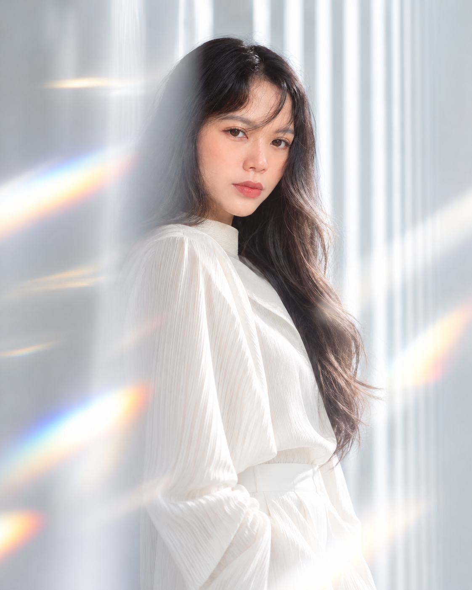
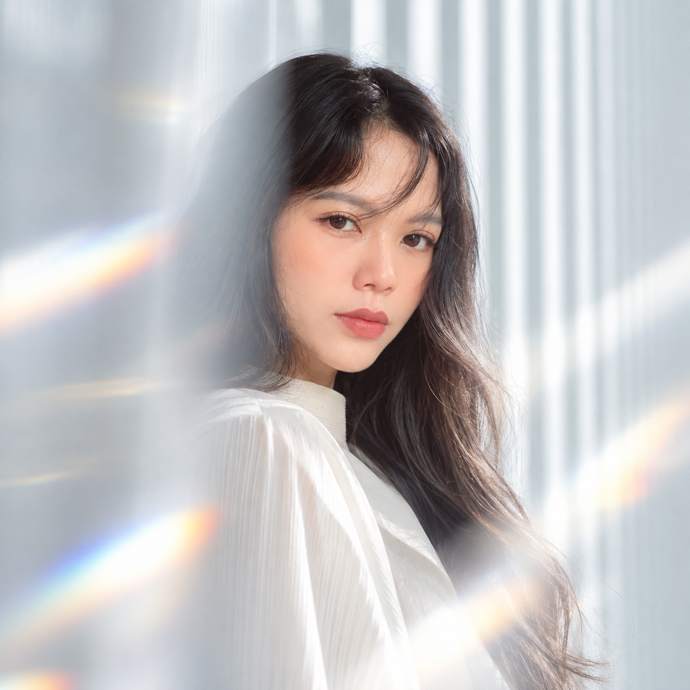

Fanny
Pramandita
Freelance motion design artist creating animated stories, campaign visuals, and microstock assets.
View selected work
Available for freelance collaborations
Selected work
Team projects I helped bring to life through selected stages of motion design and visual production.



Motion, made
together.
I work as a freelance motion design artist, joining teams where an extra pair of thoughtful hands can move a project forward.
My experience spans animated campaigns, explainers, title sequences, social content, and event visuals. My contribution changes with each production: I take responsibility for selected parts of the process, adapt to the established visual direction, and collaborate toward a consistent final result.
Alongside client work, I create microstock assets—small, reusable pieces designed to make everyday editing faster and more expressive.
- Practice
- Freelance motion design
- Approach
- Collaborative and detail-focused
- Also creating
- Microstock motion assets
Made to move.
A growing collection of practical motion elements, from playful interface stickers to technology-led loops.